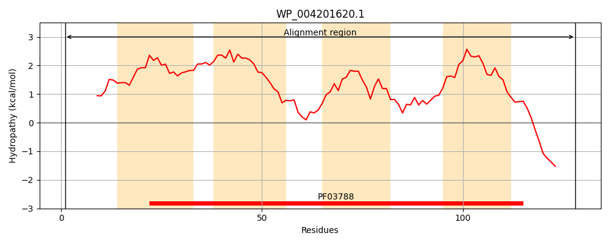
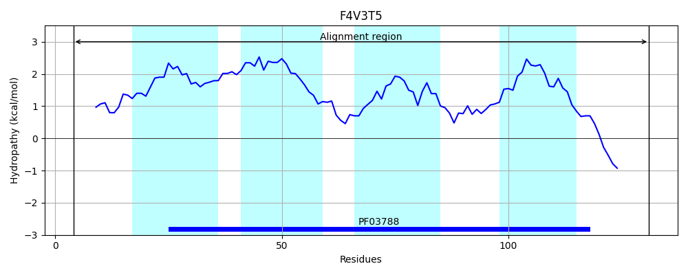
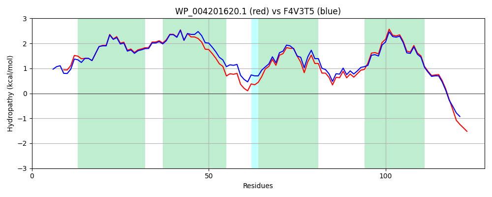

Hit Accession: F4V3T5
Hit TCID: 1.E.14.1.4
Hit Description: gnl|BL_ORD_ID|4302 gnl|TC-DB|F4V3T5|1.E.14.1.4 UPF0299 membrane protein yohJ OS=Escherichia coli TA280 GN=yohJ PE=3 SV=1
Mach Len: 128
e:0.000000
Query TMS Count : 4
Hit TMS Count: 4
TMS-Overlap Score: 3.750000
Predicted Substrates:None
BLAST Alignment:
Score: 590 , Bit scores: 231 bits, E-value: 3.6e-80, Alignment length: 128, Percentage identity: 88
Query: 1 MSKSLTIIWQYLRAFVLIYACLYAGIFIAGLLPITIPGSIIGMLILFVLLALQIMPPQWVNPGCNILIRYMALLFVPIGVGVMQYWDLLRAQLGPVVISCAISTLVVFVVVSWSSHLVHGERKVIGQK 128
MSK+L IIWQYLRAFVLIYACLYAGIFIA LLP+TIPGSIIGMLILFVLLALQI+P +WVNPGC +LIRYMALLFVPIGVGVMQY+DLLRAQ GPVV+SCA+STLVVF+VVSWSS LVHGERKV+GQK
Sbjct: 4 MSKTLNIIWQYLRAFVLIYACLYAGIFIASLLPVTIPGSIIGMLILFVLLALQILPAKWVNPGCYVLIRYMALLFVPIGVGVMQYFDLLRAQFGPVVVSCAVSTLVVFLVVSWSSQLVHGERKVVGQK 131 | Protein Hydropathy Plots: |
|---|
|  |  |
Pairwise Alignment-Hydropathy Plot:
|
|---|
|  |